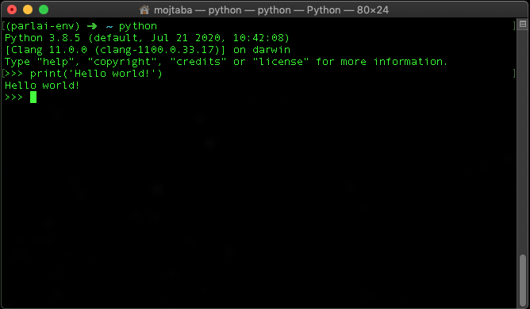
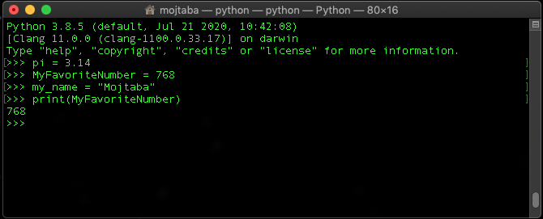
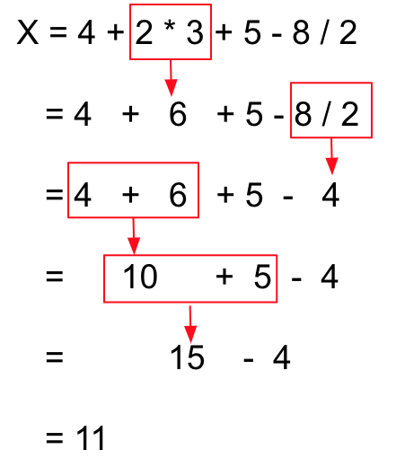
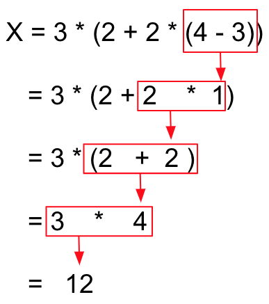
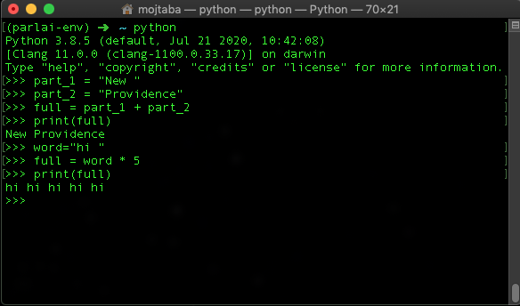

Introduction

What to expect from this course.
You are in the right place if any of these are true:
- Computers and how they are programmed is a mystery to you, and you want to know more about them.
- You are curious to see what can be done if you knew programming.
- You have some casual experience with programming, but want to go beyound that.
- You just enjoy learning new skills.
Why Python?
- Most importantly, becasue it is easy to learn. This allow us to focus on the concepts instead of strugling with its syntax.
- It is a modern and prevalent language used anywahere these days. From Google's website to super computers that run artificial intelligence.
- It has a large ecosystems of libraries: this means many functionalities that you may need are already there, you just need to find them and use them.
A bit about how computers work
All that computers do can be summarized in a few easy steps:- Receive a command.
- Process the command and do everything that was asked.
- Present the output to user. For example on screen or as an output file.
Chain of command
Operating systems (Windows, Mac, etc.) are the programms available on any computer these days. In their core, they are a set of programms for doing some fundamental tasks with a computer: truning it on, showing files, copying files, etc. All the actions in their graphical user interface is a command sent to computers, and the actions that happen are what the programms do.
BUT, there is another way to interact with your OS (short for operating system): through its command line interface. Command line interface allows you to directly type in command for your OS to execute. Here we are going to use it a lot.
Try it!
Let's quickly run 2 simple command in your command line interface:- dir (Windows) or ls (Mac): shows the content of your current directory.
- cd: changes the dirctory.
Pre-requisites
Install Python
Install Python 3.7 or later. You can download an installable version from here. Usually all you need to do is to click all the next buttons until the end.
Run Python
Open Python from your command line interface (by typing python). Now you are in the Python interface, which receives Python commands; similar to how your command line interface was receiving OS command.
First python command to learn is print. Type print('Hello world!') in your Python interface. This is a command that tells python to print something to its command interface output. Here, print is what we call a function. A function is a simple way to tell Python do something in your programm (in this case output something on the screen).
Functions may receive some input. For example in the above case the input was 'Hello world!', which we directly passed to the function. But in practice, most of the times, we use variables with functions.
Variables
Variables are one of the most important concepts in programming. A variable is unit of information. When write a code, we use variables to tell the computer keep something in its memory. Later on, we use that variable to recall what was stored. Variables can store numbers or text, as well as many other things that we will discuss later.
Naming variables
There is some restrictions on how you can name a variable. Generally, we name variables using only
- Letters of English Alphabet: for example catName and Salary
- Numbers: for example: tax2020 and R2D2. Numbers can NOT be the first character in the variable name: 2names is WRONG!
- Underscore character "_": for example tax_2020
For variables that are numbers we just type them as they are, for example x = 2.3. But variables that keep text (calling it string from now on), need to have their text inside a qutation, for example city = "New Providence". See these examples. Try to do some on your own.
Using variables
A little bit of math here. You can use any of the four fundamental arithmetic operations on numeric values, using their respective character:
- +: addition
- -: subtraction
- *: multiplication
- /: division
Having a long arithmetic expression that incldues multiple operations, Python (as well as all the other languages) first processes * and / from left to right, then processes + and -, again from left to right. For example, this is how a computer runs its calculation
In addition, you can use brackets, "(" and ")", in the same way as you do in math. When you use them, the calculations inside the brackets happens first and then the result is used with the rest of the calculations. If there are multiple levels of brackets, the inner most one gets executed first. The order inside the brackets is the usual order we saw in the above example. The following example should make this clear.
You can use + operation with string variables too. It will join two strings together and makes a new one. One can also use * between a string and a number. The result will be the string repeated as many times as the number (the number MUST be positive integer). See this example.
Another important point in this example is how after the variable named full was used again, it lost its original value and stored a new one.
Some Python coding
So far we have been using Python interface and running commands with it one by one. However, real applications are a combination of thousands/millions of commands like that. Each program is a series of this commands written in a file.
Enters your favorite IDE
Programmers use an Integrated Development Environment (also known as IDE) for writting their codes. You can write your code in anything that helps you create a text file: Notepad, MS Word ... etc. But there are some applications that are more tuned for writting code. There is no end to the list of these programs. Feel free to choose one that suits you the most. This is a recent list with some details on each.
I recommend two IDEs that are easy to use:
- Notepad++ (only Windows)
- Visual Studio Code
Writing our first (actual) code
Open your (donwloaded and installed) IDE and write the following code in it. Notice the first two lines that start with #. These line are what we call comments. Python will ignore these lines. Programmers put these in their codes as notes for someone who reads the code later.# This is my first program
# I am learning how to use Python
print("hello again world!")Save your files somewhere on your computer (don't forget where). Let's call it my_program.py (the .py extension is important). Use the command line interface of your computer with cd and dir (or if you are on Mac, ls) to go to the directory that you saved your file. Then run this command to execute your Python code. Enjoy!
python my_program.pyReceiving input
input is a function that asks users to insert something. Using input you can ask users a question and store their response in a variable. The output is of type string. Create a new code file for the following program and run itname = input("What is your name? ")
print("Hello " + name)If you have done the above excercise you notice the odd resutls. This is because the input stored the value as a string. You have to convert that variable to a numeric one. There are two functions you can use for this conversion:
- int: makes a integer number. for example, 3, 992, -652.
- float: makes a float point number. for example, 3.80, 1.000, -0.62.
# x is a string
x = "34"
# This line turns x into an integer/number
x = int(x)Retry the above excersie and use these functions.
Lists and Dictionaries
Lists and Dictionaries are two extremely useful type of variables in Pyhton (and again any other programming language). They are variables that store more than one values.
List
A list is an ordered, well list, of other values. An item in the list is anything that we can use to store in a variable (numbers and strings). We define a list by putting these items inside "[" and "]" characters.
# An example program that uses lists
# We are going to have a lot of commenting on this one
# This is the list of integer numbers betwen 2 and 5 (inclusive)
numbers = [2, 3, 4, 5]
# And the list of days in a week
dayOfWeek = ["Monday", "Tuesday", "Wednesday", "Thursday", "Friday", "Saturday", "Sunday"]Your program can access each of these values by their order in the list (we call this the index of that variable). We do this by using the name of the list and then adding the index number in front of it in between "[" and "]". Just remember, in computers, we usually start counting from 0 instead of 1. So, the first item in a list is its 0th item for a computer, and the 5th one is the 4th (not confusing at all!). See the following examples for understanding this better:
numbers = [8, 9, 10, 26, 87]
# This will output 10
print(numbers[2])
# You can also change the values inside a list
numbers[1] = 888
# Try finding the output to this.
print(numbers[1])
Dictionaries
Dictionaries are similar to lists, but instead of using the order, they have a name for each value they are storing. We call this name the key to that value. The key can be a number, string, or many other types. When defining a dictionary you must add both keys and values. We add them as a pair, separated by a ":". The first one is the key and the second one is its corresponding value. A dictionary a list (for the lack of better word) of these pair inside "{" and "}" characters. The best way to see this is through examples:
# A dictionary for keeping the price of items.
# here, "orange" is the key with value is 4, and so on
prices = {"orange": 4, "apple":2 , "potato": 0.5}
# Squared values of numbers
sq = {1:1, 2:4, 3:9}Accesing the values in a dictionary is similar to lists (using "[" and "]"). But here we use the key, instead of the index.
prices = {"orange": 4, "apple":2 , "potato": 0.5}
# Note how we print more than one thing with print function
# by passing them all in and adding a , between them
print("Price of orange is", prices["orange"])
# Changing the values
prices["orange"] = 8
print("Price of orange is", prices["orange"])
# If you are setting a value with a key that does not exist
# Python will add that to the dictionary
prices["banana"] = 3.2
print("Price of orange is", prices["banana"])